S40 — Why Do We Sneeze?
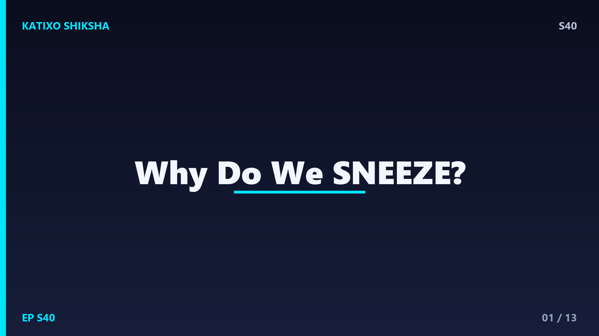
Slide 1दोस्तों, आची! वो अचानक आने वाला धमाका जो तुम्हें पल भर के लिए हिला देता है, और जिसे रोकना लगभग नामुमकिन होता है। पर क्या तुमने कभी सोचा है, हमें छींक यानी sneeze आती क्यों है? और सबसे हैरान करने वाली बात, ये इतनी तेज़ क्यों होती है? तुम्हें पता है, एक छींक से निकलने वाली हवा की रफ़्तार 150 किलोमीटर प्रति घंटा तक पहुँच सकती है! आज Katixo KhojLab पर हम सुलझाएँगे छींक का पूरा राज़, और जानेंगे कि ये असल में हमारे शरीर का एक चालाक बचाव हथियार है। चलो शुरू करें!
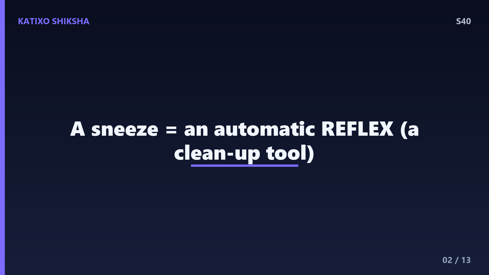
Slide 2सबसे पहले समझो, छींक होती क्या है। छींक असल में हमारे शरीर की एक automatic यानी अपने आप होने वाली प्रतिक्रिया है, जिसे कहते हैं reflex. ये बिलकुल वैसी ही है जैसे गर्म चीज़ छूते ही हाथ झट से पीछे खींच लेना। तुम छींक को सोच-समझकर नहीं लाते, ये अपने आप होती है। इसका असली मकसद है हमारी नाक की सफ़ाई करना। जब नाक में कोई बाहरी चीज़ घुस आती है, तो शरीर एक ज़ोरदार हवा के झोंके से उसे बाहर फेंक देता है। तो दोस्तों, छींक कोई बीमारी नहीं, बल्कि एक सुरक्षा कवच है!
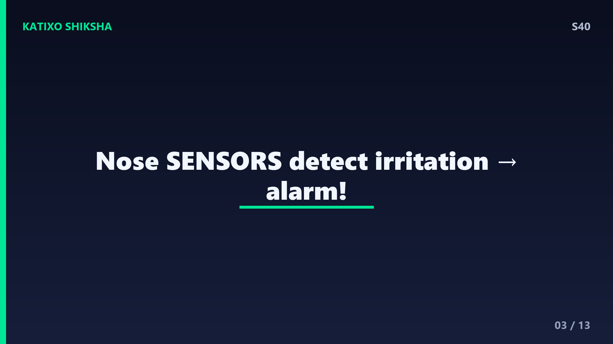
Slide 3अब जानो छींक की शुरुआत कहाँ से होती है। हमारी नाक के अंदर की परत बहुत संवेदनशील होती है, और उस पर होते हैं खास sensors यानी संवेदक। जब कोई परेशान करने वाली चीज़, जैसे धूल, pollen, काली मिर्च, या कोई germ नाक में घुसता है, तो ये sensors तुरंत भाँप लेते हैं कि कुछ गड़बड़ है। ये जलन को कहते हैं irritation. फिर ये sensors एक तेज़ signal भेजते हैं, बिलकुल किसी अलार्म की तरह। ये अलार्म जाता है सीधे हमारे दिमाग के एक खास हिस्से में, जो छींक का पूरा command संभालता है।
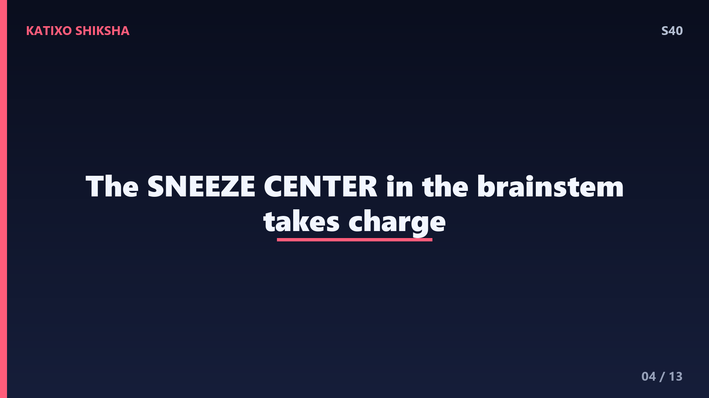
Slide 4वो दिमाग का हिस्सा जो छींक को control करता है, उसे कहते हैं sneeze center, और ये हमारे brainstem में होता है, यानी दिमाग का निचला हिस्सा जो साँस और दिल जैसी अपने आप चलने वाली चीज़ें संभालता है। जैसे ही sneeze center को नाक से अलार्म मिलता है, वो एक बड़ी योजना बना लेता है। वो कई अलग-अलग मांसपेशियों को एक साथ काम करने का आदेश भेजता है, जैसे एक conductor पूरे orchestra को एक साथ बजवाता है। ये सब कुछ सेकंड के कुछ हिस्सों में हो जाता है, दोस्तों, बिना तुम्हारे कुछ सोचे!
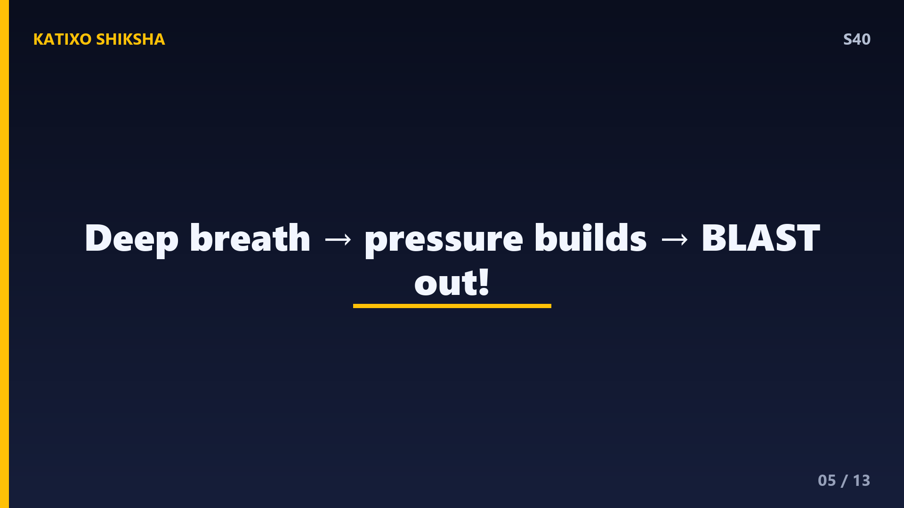
Slide 5अब समझो छींक का असली विस्फोट कैसे बनता है। sneeze center के आदेश पर सबसे पहले तुम एक गहरी साँस अंदर लेते हो, जिससे फेफड़े यानी lungs हवा से भर जाते हैं। फिर तुम्हारी आँखें बंद हो जाती हैं, और गले का रास्ता पल भर के लिए बंद हो जाता है। इससे फेफड़ों के अंदर हवा का दबाव बहुत बढ़ जाता है। और फिर अचानक, वो रास्ता खुलता है और सारी हवा एक धमाके के साथ नाक और मुँह से बाहर निकलती है! यही अचानक छूटा दबाव छींक को इतना ताकतवर बनाता है, दोस्तों।
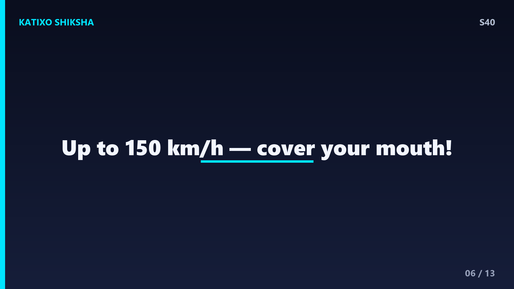
Slide 6अब वो हैरान करने वाली रफ़्तार समझो। जब छींक छूटती है, तो हवा बहुत संकरे रास्ते से तेज़ी से बाहर निकलती है, इसलिए उसकी speed बहुत ज़्यादा हो जाती है। वैज्ञानिकों ने नापा है कि छींक की हवा 150 किलोमीटर प्रति घंटा तक तेज़ हो सकती है, यानी किसी तेज़ कार जितनी! और इसके साथ निकलते हैं हज़ारों सूक्ष्म droplets यानी पानी की नन्ही बूँदें, जो कई मीटर दूर तक उड़ सकती हैं। यही वजह है दोस्तों कि छींकते समय मुँह ढकना इतना ज़रूरी है, ताकि germs दूसरों तक ना फैलें। ये एक छोटी सी आदत बहुत बड़ी सुरक्षा देती है।
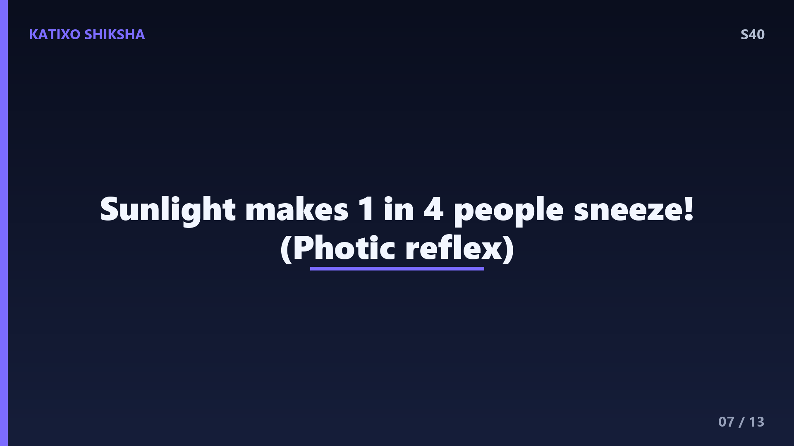
Slide 7अब एक बहुत मज़ेदार सवाल, धूप में देखते ही कुछ लोगों को छींक क्यों आ जाती है? ये कोई कल्पना नहीं, ये सच में होता है और इसका एक नाम भी है, photic sneeze reflex. दुनिया में करीब हर चार में से एक इंसान को तेज़ रोशनी देखते ही छींक आ जाती है। वैज्ञानिक मानते हैं कि ऐसा शायद इसलिए होता है क्योंकि आँख और नाक की nerves दिमाग में बहुत पास-पास होती हैं, और रोशनी का signal गलती से छींक वाली nerve को भी छेड़ देता है। मज़े की बात, ये अक्सर परिवारों में चलता है, यानी ये genetic भी हो सकता है!
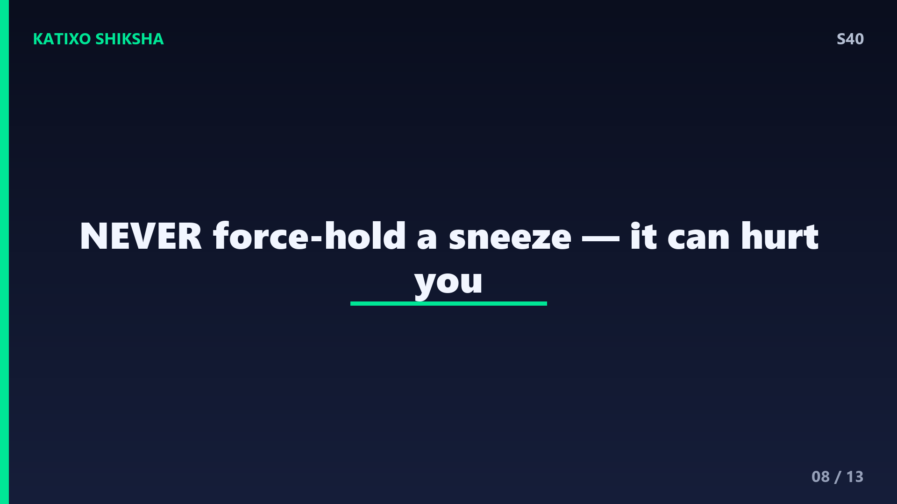
Slide 8अब एक बहुत ज़रूरी बात, छींक को कभी ज़बरदस्ती मत रोको, दोस्तों! बहुत से लोग नाक दबाकर और मुँह बंद करके छींक को अंदर ही रोक लेते हैं। पर ये ख़तरनाक हो सकता है। छींक में बनने वाला तेज़ दबाव अगर बाहर नहीं निकल पाया, तो वो कान, साँस की नली, या आँखों की नाज़ुक नसों को नुकसान पहुँचा सकता है। बहुत ही दुर्लभ मामलों में इससे कान का पर्दा भी फट सकता है। तो सही तरीका है, अपनी कोहनी या tissue से मुँह ढको और छींक को आराम से बाहर आने दो। शरीर की प्राकृतिक सफ़ाई को रोकना समझदारी नहीं है।
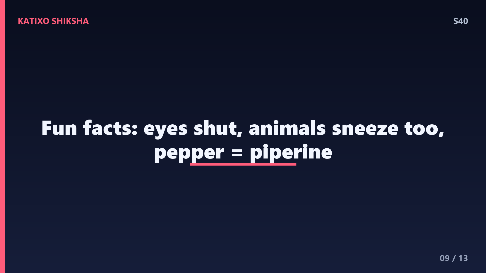
Slide 9छींक से जुड़े कुछ और मज़ेदार fun facts सुनो, दोस्तों। पहला, जब तुम छींकते हो, तो तुम्हारी आँखें अपने आप बंद हो जाती हैं, ये एक reflex है, पर इसका ये मतलब नहीं कि आँखें खुली रहें तो बाहर निकल जाएँगी, ये बस एक मिथक है! दूसरा, इंसान नींद में आमतौर पर नहीं छींकता, क्योंकि नींद में वो nerves शांत रहती हैं। तीसरा, सिर्फ इंसान ही नहीं, कुत्ते, बिल्ली, यहाँ तक कि हाथी भी छींकते हैं! और हाँ, बहुत तेज़ काली मिर्च सूँघने पर छींक इसलिए आती है क्योंकि उसमें piperine नाम का तत्व नाक को परेशान करता है।
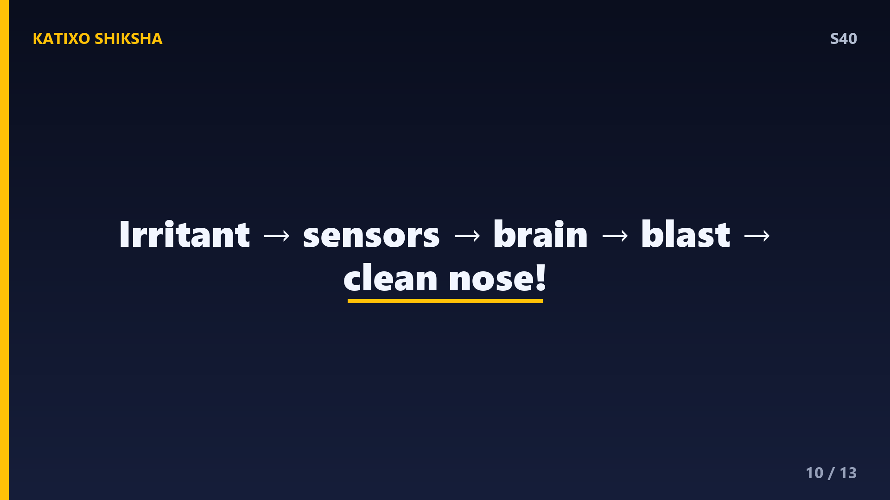
Slide 10तो चलो पूरी कहानी एक साथ जोड़ें। छींक हमारे शरीर का एक सफ़ाई reflex है। जब धूल या germ नाक के sensors को परेशान करते हैं, तो वो दिमाग के sneeze center को अलार्म भेजते हैं। फिर sneeze center कई मांसपेशियों को आदेश देता है, गहरी साँस अंदर जाती है, दबाव बढ़ता है, और एक धमाके के साथ 150 किलोमीटर प्रति घंटा की हवा बाहर निकलकर नाक साफ़ कर देती है। कुछ लोगों को रोशनी से भी छींक आती है, और छींक को कभी रोकना नहीं चाहिए। कितनी कमाल की है ना हमारे शरीर की ये automatic सुरक्षा! अब चलो test करते हैं।
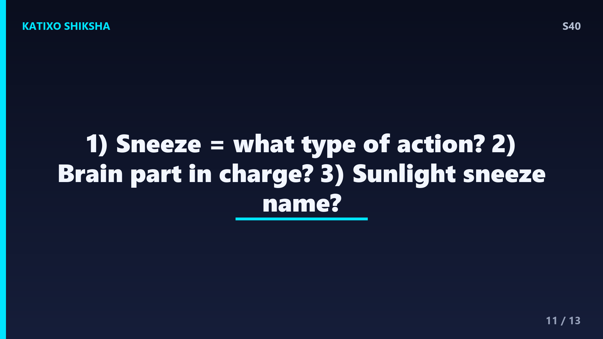
Slide 11Quick brain check! दोस्तों, तीन सवाल हैं, ध्यान से सोचो। पहला, छींक असल में किस तरह की automatic प्रतिक्रिया है, यानी इसे एक शब्द में क्या कहते हैं? दूसरा, दिमाग का वो हिस्सा जो छींक को control करता है, उसे क्या कहते हैं? और तीसरा, धूप या तेज़ रोशनी देखकर छींक आने वाली घटना को क्या कहते हैं? अब video को pause करो, थोड़ा दिमाग लगाओ, और अपने जवाब मन में या copy में लिखो। तैयार हो दोस्तों? बहुत बढ़िया! चलो अगली slide पर सही जवाब देखते हैं।
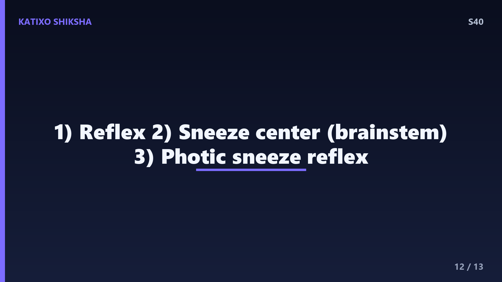
Slide 12तो दोस्तों, जवाब मिलाने का समय! पहला जवाब, छींक एक automatic प्रतिक्रिया है जिसे कहते हैं reflex, यानी हमारे शरीर की अपने आप होने वाली क्रिया। दूसरा जवाब, छींक को control करने वाला दिमाग का हिस्सा कहलाता है sneeze center, जो brainstem में होता है। और तीसरा जवाब, रोशनी देखकर छींक आने को कहते हैं photic sneeze reflex, जो करीब हर चार में से एक इंसान को होता है। अगर तुमने तीनों सही किए, तो शाबाश दोस्तों! तुम तो असली human body expert बन गए। चलो आख़िरी slide पर चलें।
Slide 13तो आज हमने सीखा, छींक कोई बेकार चीज़ नहीं, बल्कि हमारे शरीर का एक तेज़ और होशियार सफ़ाई हथियार है। नाक के sensors से लेकर brain के sneeze center तक, और फिर 150 किलोमीटर प्रति घंटा के उस धमाके तक, पूरी प्रक्रिया कुछ ही पलों में हो जाती है। याद रखना, छींकते समय मुँह ढको और छींक को कभी ज़बरदस्ती मत रोको। दोस्तों, हमारी ये series यहीं तक, पर सीखने का सफ़र कभी नहीं रुकता! नए episodes के लिए channel पर बने रहो, और दुनिया के हर क्यों और कैसे का जवाब हम साथ मिलकर ढूँढेंगे। Subscribe करना मत भूलना! Bye!